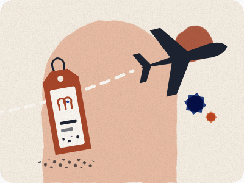

Casablanca airport to the city, day and night
Train, Aérobus, grand taxi or Uber from Mohammed V airport (CMN) into Casablanca: what each costs, which run at night, and what to watch for.

Written by Omar Oujoud in Casablanca. Research drafting is AI-assisted; observations are recorded in person. How we check
The facts on this page were reviewed against their sources between 28 September and 7 October 2026. None has been checked in person yet. Each fact shows its own status and date.
Jump to what’s still being checked · sources
Our advice: by day and in the evening, take the train or the Aérobus: both have a fixed fare. Late at night the Aérobus is still running. If you prefer a taxi, go to the grand taxi rank and agree the fare shown on the airport’s fare list before your bags go in.
The routes at a glance
Your options, side by side
| Detail | Train to Casa Voyageurs | Aérobus to Casa Port | Grand taxi |
|---|---|---|---|
| Fare | 50 MAD 2nd class · 70 MAD 1st class Unconfirmed Sources | 50 MAD flat fare Source-checked 28 Sep 2026 Sources | Shown on a fare list in Terminal 1 Unconfirmed Sources |
| When it runs | About 06:50 to 22:50; varies by season Unconfirmed Sources | Every 25–40 minutes, day and night Source-checked 28 Sep 2026 Sources | 24 hours Unconfirmed Sources |
| Journey time | About 30 minutes Unconfirmed Sources | About 30 minutes to the centre Unconfirmed Sources | Not yet confirmed |
| Where it leaves | Station below Terminal 1, reached from arrivals Unconfirmed Sources | Terminal 2, then Terminal 1 Source-checked 28 Sep 2026 Sources | Desk on the arrivals forecourt Unconfirmed Sources |
| Paying | Card only at ONCF ticket machines Source-checked 28 Sep 2026 Sources | Cash, bank card or rechargeable card Source-checked 28 Sep 2026 Sources | Not yet confirmed |
Arriving late at night
Airport trains are listed as running from about 06:50 to 22:50 Unconfirmed Sources, and the times change with ONCF’s seasonal timetables. The Aérobus runs every 25–40 minutes, day and night Source-checked 28 Sep 2026 Sources, and airport taxis run 24 hours Unconfirmed Sources.
Our advice: check the last train for your date before you fly. If you land within about an hour of it, plan as if you will miss it: passport control and baggage can take a while. Your options are then the Aérobus, a grand taxi from the rank, or a pickup arranged by your accommodation; ask about that when you book.
Our advice: get some cash in dirhams before you leave the terminal. Whether cash machines and exchange desks are open at night is not yet confirmed.
First and last trains
Guides disagree about the first train because ONCF changes the airport timetable during the year. During Ramadan 2026 trains ran hourly from 05:40 to 22:55 Unconfirmed Sources, and in ONCF’s summer 2026 plan hourly from 06:00 to 23:00, until 13 September Unconfirmed Sources. Some travel guides still give 04:50.
Our advice: the first and last trains depend on the date, so search your exact date on ONCF’s booking site before relying on a train.
Taking the train
The station is below Terminal 1, reached from the arrivals hall Unconfirmed Sources. An ONCF e-ticket can be shown on your phone or printed Source-checked 28 Sep 2026 Sources; you do not need to collect a paper ticket.
If you land at Terminal 2, the station is in Terminal 1: a free shuttle bus links the two terminals Unconfirmed Sources.
Some airport trains also run to Casa Port Unconfirmed Sources, as well as Casa Voyageurs; check the destination on your date.
Our advice: buy your ticket before you fly if you can. ONCF’s machines take cards, not cash.
Our advice: from Casa Voyageurs, a red petit taxi can take you on to your address; ask the driver to use the meter.
Taking the Aérobus
The Aérobus costs 50 MAD Source-checked 28 Sep 2026 Sources and runs from Terminal 2 and Terminal 1 to Casa Port, through the central boulevards Source-checked 28 Sep 2026 Sources. On the way it serves Place des Nations Unies, Parc de la Ligue Arabe, Casablanca Finance City, Technopark and Casanearshore Unconfirmed Sources.
The coaches wait outside Arrivals at the main exit, at stops marked on the forecourt Unconfirmed Sources.
Our advice: if you cannot see the stop, ask airport staff for the Aérobus at your terminal.
Taking a grand taxi
According to the airport operator, the airport taxi fares are displayed on a sign in Terminal 1 and at a desk on the arrivals forecourt Unconfirmed Sources. We have not yet seen the sign, so we do not repeat fares from other websites. We only publish a taxi fare once we have recorded one at the rank; it will appear in our fare log.
Red petit taxis may not go to the airport, which is outside their city area; grand taxis serve it Unconfirmed Sources.
Our advice: do it in this order:
- Walk past offers of a taxi inside the terminal.
- Go to the rank and find the displayed fare list before you talk to anyone.
- Tell the driver your destination and agree the total for the whole car, including your luggage, before any bags go in.
- Have cash in dirhams. Whether airport taxis take cards is not yet confirmed.
Uber and other ride apps
Uber resumed service in Casablanca and Marrakech on 27 November 2025, with licensed transport vehicles and drivers only Unconfirmed Sources. Whether it can pick you up at the airport is not yet confirmed. Morocco’s Ministry of Transport has said that carrying paying passengers without a transport licence, or in a private car, is an offence Unconfirmed Sources.
Our advice: for a first arrival, the Aérobus, the train or the taxi rank are the simplest choices. Whichever you take, check that the car is a licensed taxi or transport vehicle before you get in.
What to watch for
Our advice: these four habits avoid most surprises:
- Offers inside the terminal. The fare to compare against is the one on the displayed fare list.
- An extra charge that isn’t on the list. Ask to see it on the list before you agree.
- Agreeing a price once you’re moving. Settle it before the car leaves.
- Large notes. Carry some smaller notes; the driver may not have change.
Which one suits you
Our advice: if you are continuing by train, for example to Marrakech, take the airport train to Casa Voyageurs and change there. If you are staying near Casa Port or the city centre, compare the Aérobus route with your address first. Either way, avoid booking a tight onward connection.
Still being checked
Not yet confirmed, so not stated as fact on this page:
- The first and last airport trains in the timetable running now, after the summer plan ended on 13 September.
- How long the shuttle or the walk from Terminal 2 to the Terminal 1 station takes.
- The exact Aérobus stop outside each terminal.
- The fares shown on the airport taxi sign, by day and at night, and when the night fare starts.
- Whether the taxi fare is for the whole car, and whether airport taxis take cards.
- Exactly where the taxi rank is.
- A taxi fare, recorded in person at the airport rank.
- Whether ride apps can pick up at the airport, and where.
- Whether cash machines and exchange desks in arrivals are open at night.
- Whether foreign cards work at ONCF ticket machines.
- A metered petit taxi fare from Casa Voyageurs to the city centre.
- How long it takes from landing to the train platform.
Next on your route.
Each guide covers one step of the journey.
Sources for this page
Every fact on this page shows when it was checked and links here to its source. What the badges mean.
- Casablanca airport rail access: ONDA. Reviewed 28 Sep 2026.
- Casablanca Aérobus: Casabus, Casablanca airport (ONDA), maroc.ma, government portal. Reviewed 28 Sep 2026.
- Casablanca airport taxis: Casablanca airport (ONDA). Reviewed 30 Sep 2026.
- Aérobus journey and stops: Le Brief, Industries du Maroc, Maroc Hebdo. Reviewed 7 Oct 2026.
- ONCF machine payment: ONCF. Reviewed 28 Sep 2026.
- Airport trains, Ramadan 2026 timetable: LesEco.ma, La Vie éco. Reviewed 30 Sep 2026.
- Airport trains, ONCF summer 2026 plan: ONCF, Echos Plus, H24info, La Relève. Reviewed 30 Sep 2026.
- Casa Voyageurs / ONCF passenger procedures: ONCF. Reviewed 28 Sep 2026.
- Casablanca airport terminal shuttle: Wikipedia (French). Reviewed 30 Sep 2026.
- Airport trains to Casa Port: Wikipedia (French), ONCF. Reviewed 7 Oct 2026.
- Aérobus stops at the airport: Casablanca airport (ONDA). Reviewed 30 Sep 2026.
- Petit taxis and the airport: La Vie éco. Reviewed 30 Sep 2026.
- Uber in Morocco: TelQuel, Médias24, Le Desk. Reviewed 30 Sep 2026.
- Ride apps and the law: TelQuel, Médias24, H24info. Reviewed 30 Sep 2026.